1 Introduction
Statistical offices and central banks increasingly measure prices from retailers’ websites and scanner data (Cavallo and Rigobon 2016; Eurostat 2017, 2020). These sources carry millions of products, but a product enters a consumer price index only after it has been assigned to an item of the official basket. Done by hand, that step does not scale; done by a model, it introduces an error. The literature on classification for price statistics reports this error as accuracy (Martindale et al. 2020; Harms and Spinder 2019; BIS Innovation Hub 2026). A central bank does not target accuracy. It needs to know how far measured inflation would move.
This paper puts that question to one language and one index. We classify Thai product text into the in-scope items of the Thai CPI with four families of method: multilingual text embeddings with simple classifiers, a fine-tuned multilingual encoder, few-shot prompting of two commercial LLMs, and cascades that send a cheap classifier’s unsure products to an LLM. We score them on 3,910 held-out official price-collection specifications, published by the Ministry of Commerce with their official item codes, and weight every score by CPI expenditure. We then pass each method’s confusion matrix through a simulator of the Thai CPI, built from public weights and item indices, which returns the error the classifier would add to measured headline, food and core inflation in basis points. Three questions organise the paper.
RQ1: how far does transfer from other languages go, and what are official labels worth? Thai labelled product data are scarce, while Open Food Facts holds millions of products in other languages. An e5-large classifier trained only on non-Thai products classifies 60.3% of the evaluated CPI weight correctly. Up to 1,000 official labels add little, and all 24,456 of them raise it to 68.8%.
RQ2: what does accuracy cost? On official Thai text the LLMs are far ahead: Claude Opus 5.5 reaches 97.9% and Claude Haiku 5.5 95.4%, against 69.5% for the best cheap method with the full input. A cascade from the e5-large classifier to Claude Opus 5.5 scores 97.8% at 27% of its cost, a difference from Claude Opus 5.5 that the reference set cannot tell from zero. Most of the remaining LLM error comes from two places where our description of the items differed from the office’s practice, not from misreading Thai.
RQ3: what does classification error cost in basis points? With Claude Opus 5.5’s confusion matrix, headline year-on-year inflation would be misstated by 1.9 basis points (RMSE; at most 3.7 at the upper end of a 95% interval that allows errors to cluster) and food inflation by 3.2. The cheap classifiers trained on all labels misstate headline inflation by between 1.9 and 10.4 basis points. Accuracy does not rank methods by this error: two classifiers with the same weighted accuracy differ several-fold in basis points, because what matters is whether the confused items’ prices moved apart.
The paper makes three contributions. First, it turns a confusion matrix into basis points of measured inflation, with a decomposition that attributes the error to individual confusions and an uncertainty band that reflects how few observations some rows rest on. The simulator needs only public weights and item indices, so any office can apply it to its own classifier. Second, it evaluates classification for a CPI in a non-European language, on the office’s own held-out specifications and with expenditure weights on both accuracy and coverage. Third, the whole pipeline is public and reproducible: it uses only open data, every number in the paper is generated by code, and the LLM runs cost USD 14.72 in total.
The closest work is the BIS Innovation Hub’s Project Spectrum (BIS Innovation Hub 2026), which classifies euro-area web prices and names testing other languages and back-testing indices as next steps (BIS Innovation Hub 2026, 30). Our taxonomy, language, product universe and labels differ from Spectrum’s, so our numbers are not directly comparable with theirs. Section 2 reviews the literature, Section 3 describes the data and Section 4 the methods. Section 5 answers the three questions, Section 6 draws lessons for central banks in Asia, Section 7 lists the limitations and Section 8 concludes.
2 Related work
Online prices. Prices collected from retailers’ websites have become a measurement source in their own right (Cavallo and Rigobon 2016). For large multi-channel retailers, online and offline prices are largely the same (Cavallo 2017), and online prices help forecast and nowcast inflation (Aparicio and Bertolotto 2020; Macias et al. 2023). Every such index needs each product assigned to a category of the official basket first; this paper is about that step.
Classification in official statistics. Eurostat’s guides on scanner data and web scraping for the HICP treat classification as one of the main processing steps (Eurostat 2017, 2020), and euro-area statistics have moved towards these sources (Eiglsperger 2019). National statistical offices have classified products with machine learning: the ONS with clustering and decision trees (Metcalfe et al. 2016) and with semi-supervised label propagation into CPIH basket items (Martindale et al. 2020), Statistics Netherlands with supervised classifiers, of which logistic regression performed best (Harms and Spinder 2019), and the U.S. Census Bureau with text classification of product descriptions for the Economic Census (Roberson 2021). The Australian Bureau of Statistics reported that it was investigating machine learning to automate the classification of web-scraped products (Australian Bureau of Statistics 2020), and a UNECE project surveyed such uses across offices (United Nations Economic Commission for Europe 2021). These studies report accuracy; they do not translate it into the error of the resulting index.
Project Spectrum. The closest work is the BIS Innovation Hub’s Project Spectrum (BIS Innovation Hub 2026), which classifies the ECB’s Daily Price Dataset into ECOICOP 2018 subclasses. It finds that text embeddings with classic classifiers reach accuracy comparable to LLM prompting at a small fraction of the cost and time (BIS Innovation Hub 2026, 3), and reports accuracy weighted by CPI expenditure at the subclass level (BIS Innovation Hub 2026, 22–24). It argues that, for nowcasting, errors at the subclass level usually matter less than errors at higher levels of the hierarchy, depending on how differently the confused categories’ prices move (BIS Innovation Hub 2026, 25), and it names two next steps: testing the approach on other data sets and languages, and building CPI indices from the classified data to back-test them against official inflation (BIS Innovation Hub 2026, 30). This paper takes up the first for one non-European language and complements the second: it does not back-test a web-price index, but measures the error a given confusion matrix adds to measured inflation, in basis points. Our setting differs from Spectrum’s in taxonomy, language, product universe and labels, so the numbers are not directly comparable.
Models. We use multilingual sentence encoders (Reimers and Gurevych 2019; Wang et al. 2024; Chen et al. 2024) and a fine-tuned multilingual encoder (Conneau et al. 2020). LLMs have been shown to match or beat crowd workers on text annotation (Gilardi et al. 2023), and cascades that send only hard items to an expensive model can cut cost at little loss of accuracy (Chen et al. 2023). Calibrated confidence (Guo et al. 2017) makes selective classification possible, trading coverage for accuracy (Geifman and El-Yaniv 2017); we weight both axes of that trade-off by CPI expenditure.
3 Data
All data are public. Table 1 in Appendix A lists the sources and their licences; the repository records the retrieval date and checksum of every file.
3.1 The Thai CPI
The Thai consumer price index is compiled monthly by the Trade Policy and Strategy Office (TPSO) of the Ministry of Commerce. The current base year is 2566 in the Buddhist era (2023), and the series on this base has been in use since January 2568 (2025) (Trade Policy and Strategy Office 2025). Like most national CPIs it is a Lowe index (International Monetary Fund et al. 2020): expenditure weights from a base period, price-updated to a price reference month, here December 2567. TPSO’s open API publishes monthly indices for the headline, divisions, groups and items (Trade Policy and Strategy Office 2026). It publishes no weights. The monthly release publishes price-updated weight shares for the official aggregates only (headline, the divisions, the food groups and the analytical series such as core CPI). We recover those shares from the releases and check that they add up the hierarchy and reproduce the official headline from the published sub-indices.
Below the published aggregates, item weights are not public. We partition the item codes into cells: each official aggregate owns the items whose deepest published ancestor it is, and the cell weight is the aggregate’s weight minus that of the published aggregates nested below it. Within a cell we estimate item weights in two ways and report both: an equal split (primary) and non-negative least squares on the Lowe identity, which chooses the split that best reproduces the cell’s index from its items’ indices (sensitivity). Neither is an official weight, and the paper never calls it one.
3.2 Scope: the items a product classifier can reach
A classifier of packaged-product text can only measure items sold as packaged products. We define 28 in-scope CPI items: food at home, ready-to-eat food, non-alcoholic beverages, alcoholic beverages, tobacco, personal care and cleaning products. Each is mapped to its COICOP 2018 class (United Nations Statistics Division 2018). Everything else (rents, energy, transport, services, clothing, durable goods) is out of scope (oos). In-scope items carry 40.5% of the headline weight under the equal split and 43.5% under NNLS, most of it food (Figure 1).
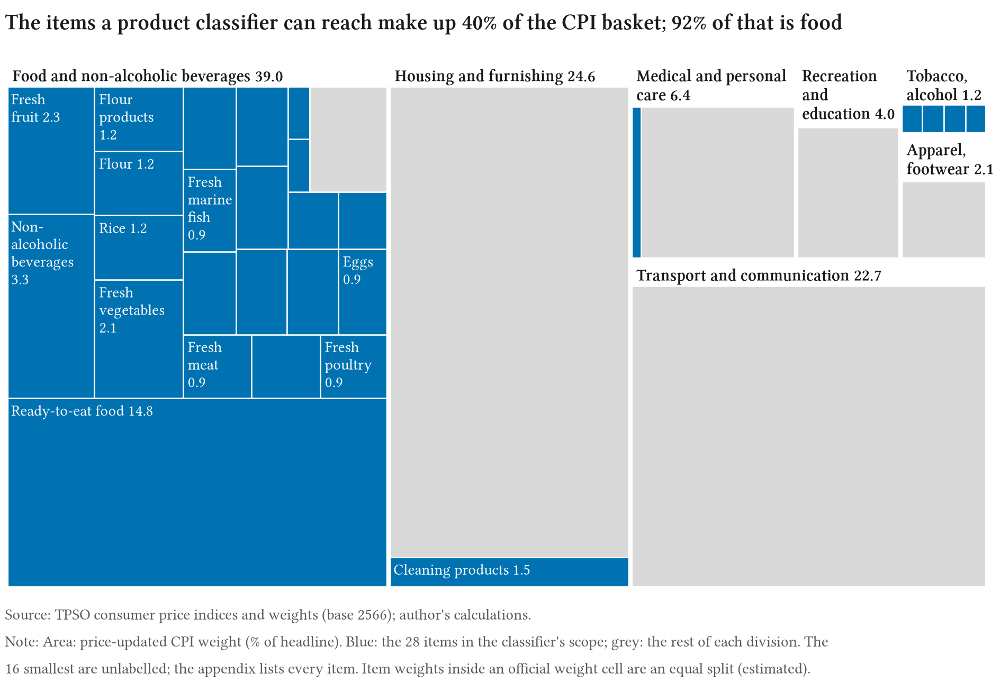
3.3 Product text
Open Food Facts. Open Food Facts (OFF) is a crowd-sourced, openly licensed database of packaged products (Open Food Facts contributors 2026). We use its Parquet export and that of its sister project Open Beauty Facts. Our extract holds 76,269 products from 18 markets: Thailand, other Asian markets and a sample of European products. Of the 10,526 products tagged as sold in Thailand, 7,303 have a name in Thai script. Model input is the product’s name, brand and quantity, joined as name | brand | quantity.
Weak labels. OFF products carry crowd-sourced category tags. A hand-curated crosswalk maps tags to CPI items, following TPSO’s own item headings rather than intuition about COICOP (for example, snacks belong to flour products in the Thai CPI). This gives weak labels: 52,255 non-Thai products and 3,945 Thai products. Weak labels are used for training and development, never for evaluation.
Official specifications. The Ministry of Commerce publishes the product specifications TPSO uses for price collection: short Thai descriptions with brand and pack size, each under an official item code (Ministry of Commerce, Thailand 2026). They cover the whole basket, so specifications of items outside our scope carry the label oos. Each specification sits under a sub-item (a seven-digit code; jasmine rice under rice, say). We hold out whole sub-items: within every item, a fifth of its sub-items (at least one) form the test split, another fifth validation and the rest training, so that a test specification’s sub-item is never seen in training; an item with a single sub-item is split by specification instead. 35 test specifications whose text duplicates a training one are dropped. This leaves 24,456 specifications for training and validation and 7,331 held out, 4,921 of them out of scope. 2 in-scope items, ready-to-eat food and sugar and confectionery, have no specifications in the published file and cannot be evaluated; the 26 evaluated items carry 24.9% of the headline weight under the equal split (40.5% for the full scope).
3.4 The reference set
Every method is evaluated on the held-out specifications, which we call the reference set: labels assigned by the office that defines the classification, on text it wrote for its own price collection. The set holds every held-out in-scope specification and, because the out-of-scope class would otherwise be two thirds of it, a fixed random 1,500 of the held-out out-of-scope specifications, carried with the matching design weight so that every estimate still refers to the whole held-out list: 3,910 rows in all, over 26 items and oos. Cascade thresholds and classifier settings are chosen on the training and validation splits only. The reference set was not sealed, however: the development grid logged its scores for every run, so they were visible while the methods reported here were chosen.
The original design called for a sample of Thai Open Food Facts products labelled by hand, blind, in a purpose-built tool, with a second pass to measure the human label ceiling. No such labels were collected; the tool and the held-out product sample remain in the repository for a later version, and Section 7 states what the official text cannot tell us.
4 Methods
Figure 2 summarises the pipeline. Every method maps a product text to one of the 28 in-scope items or oos, with a calibrated confidence; some may abstain.
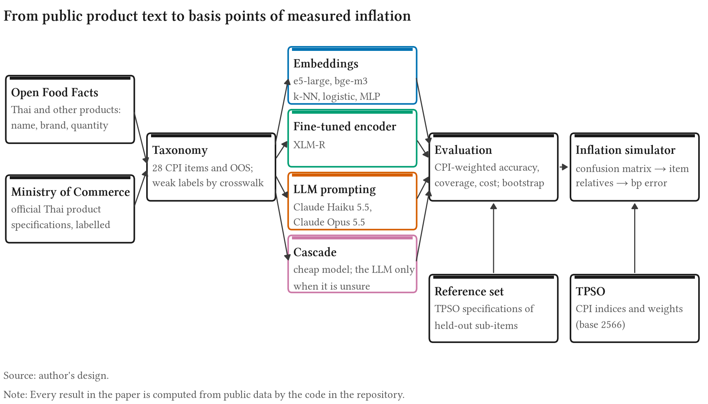
4.1 Classifiers
Frozen multilingual embeddings. Following Spectrum’s design (BIS Innovation Hub 2026, 3, 19–20), the first family embeds each text once and trains a light classifier on the vectors. We use two open multilingual embedding models run locally, e5-large (intfloat/multilingual-e5-large; Wang et al. 2024) and bge-m3 (BAAI/bge-m3; Chen et al. 2024). On top of each we fit three classifiers: cosine -nearest neighbours with similarity-weighted votes, chosen on validation macro recall; multinomial logistic regression; and a one-hidden-layer perceptron (512 units, dropout 0.2). The last two share one trainer: Adam with learning rate and weight decay , class weights proportional to the inverse square root of class frequency, and early stopping on validation loss (patience 3).
Fine-tuned encoder. XLM-R base (FacebookAI/xlm-roberta-base; Conneau et al. 2020) with a classification head, fine-tuned end to end on the same training pools with the same class weights and early stopping (4 epochs at most, batch 64, AdamW at with linear warm-up and decay, inputs truncated to 64 tokens).
LLM prompting. Two models of different cost, Claude Opus 5.5 and Claude Haiku 5.5, through the Anthropic API, one product per request. A fixed system prompt gives the instructions, the item list grouped by CPI group with short descriptions grounded in TPSO’s item headings, and 2 official specifications per item drawn from the training split (Appendix C). The answer is constrained by a JSON schema: the model names the group, then an item inside it, and a verbalised confidence, the probability in per cent that the item is right. Refusals count as abstentions. Every response is cached and every billed call is logged with its tokens and cost; total spend was capped at USD 60 and came to USD 14.72.
Cascade. A cheap classifier answers when its calibrated confidence is at least a threshold ; otherwise the product is routed to an LLM. We pair the cheap classifiers with each LLM. For each pair, is the threshold with the highest weighted accuracy on the Thai weak-label validation split, with ties broken by lower cost, chosen without reference-set scores; the reference set then scores that one threshold. The routed share, and with it the cascade’s cost, is a share of the held-out list: each specification counts with its design weight .
Training data and the learning curve (RQ1). Each embedding classifier is trained on a sequence of pools: non-Thai weak labels only (zero-shot cross-lingual transfer to Thai); plus Thai weak labels; plus or all official Thai labels; and official labels alone. The budget counts every official label a run touches, validation included, so a small-budget run cannot tune on thousands of extra official labels.
Calibration. Each run’s logits are divided by one scalar temperature fitted on its own validation rows by negative log-likelihood (Guo et al. 2017); for -NN the logits are log vote shares. The calibrated top-class probability is the confidence used by the coverage frontier and the cascade.
4.2 Evaluation
Expenditure-weighted accuracy. What matters for a price index is not how many products are classified correctly but how much CPI weight is measured correctly. Let be the CPI weight of item and the recall of item on the reference set, estimated with the design weights of Section 3.4 (Horvitz and Thompson 1952). The headline metric is (1) the CPI-weighted mean recall over the evaluated items, a weighted version of Spectrum’s in-class recall (BIS Innovation Hub 2026, 22). We also report accuracy over the whole held-out list, which counts oos specifications, and macro-F1. Abstentions are errors at full coverage.
Coverage, cost and uncertainty. Sweeping a confidence threshold traces a weighted accuracy–coverage frontier (Geifman and El-Yaniv 2017): the CPI-weighted share of products answered against on those. Cost per million products is the measured mean API cost per call plus local compute at an assumed USD 1.00 per GPU-hour times measured seconds per item. All intervals come from 1,000 bootstrap resamples of the reference set, stratified by item (Efron and Tibshirani 1993). Because a method tends to get a sub-item all right or all wrong, each resample draws whole sub-items within an item: the 2,410 in-scope specifications fall in 54 sub-items. 13 items have a single sub-item in the reference set; their specifications are resampled one by one, so their share of the uncertainty is understated. Method comparisons are paired: every method is scored on the same resamples, and the comparisons were fixed in code before the reference set was scored.
4.3 From confusion matrices to basis points (RQ3)
Setting. For an aggregate with member items , the Lowe index satisfies (2) where is the price reference month, are price-updated weights and . We take the official item relatives as the true price movement of every product in item . This isolates the error due to classification: a real web-price index would add sampling, matching and quality-adjustment error on top.
Misclassification. Let be the universe share of products whose true item is and a method’s confusion matrix, the probability that a product of item is classified as . Item is then measured from a mixture of the products sent to it: (3) Products sent to oos or abstained on are dropped, and so are products sent to the two in-scope items that have no specifications (Section 7), since those items are held at their official values; no headline method sends more than a handful of reference specifications there. If nothing flows into an item, its weight is redistributed within its CPI group. True oos products that leak into an item move with the official indices of their own items: the design-weighted mix of the out-of-scope specifications that the method sent to that item, or of all out-of-scope specifications if it sent none there. Out-of-scope items are measured perfectly. The measured index is (4) and the error is reported in basis points of month-on-month and year-on-year inflation for the headline, food and core indices. A perfect classifier gives and reproduces every official series exactly, which is a unit test of the code.
Product universe. The shares are not observed: the reference set is the office’s list, not a stream of products. We state them as an assumption and report two universes. In the primary one, products arrive in proportion to CPI expenditure weights, with the weight outside the evaluated items arriving as out-of-scope products; in the alternative they arrive in proportion to the office’s specification list, that is, the design-weighted shares of the reference set. In-scope items without specifications are held at their official values, like out-of-scope items.
Decomposition. Since , . The contribution of each confusion is therefore the item weight times the misallocated mass times the gap between the two items’ price movements. A confusion matters only if it is frequent, falls on a heavily weighted item and joins items whose prices move differently.
Uncertainty. The confusion counts come from the reference set. We draw 1,000 confusion matrices from a Dirichlet posterior, row by row. Sparse rows need a prior, and a flat one is not neutral: it sends mass to arbitrary items and creates error even for a perfect classifier. We therefore use an empirical-Bayes prior worth product per row, whose mean puts the method’s pooled accuracy on the diagonal and spreads the rest over the columns where that method’s errors actually go. Under this prior a perfect classifier has zero error in every draw. A variant adds product-level sampling noise: each product’s log price drifts from its item’s as a random walk with an assumed annual standard deviation of 5% or 10%, and item averages the products sent to it, the size of the held-out list standing in for the number of products. A perfect classifier with the same noise gives the error of the noise alone, the baseline for that variant.
The Dirichlet draws treat specifications as independent, but a method’s errors cluster: the reference set holds out whole sub-items, and a method tends to get a sub-item all right or all wrong. We therefore also resample the 112 sub-items of the reference set with replacement, 1,000 times, smooth each resample with the same prior and simulate it. Neither interval covers the assumptions of the simulator; Section 5.3 varies those separately. For each aggregate we report the root mean squared error of the inflation rate over the simulated months. The point estimate uses the posterior-mean confusion matrix and the interval is the 95% range of the RMSE across draws or resamples. Because the RMSE is not linear in the matrix, the point need not sit in the middle of the interval.
5 Results
All scores in this section are on the reference set (Section 3.4): 3,910 held-out official specifications, 2,410 of them in scope. Weighted accuracy is of equation (1) under the equal split; brackets give 95% intervals from 1,000 stratified bootstrap resamples. The NNLS split is reported where it changes a conclusion.
5.1 RQ1: cross-lingual transfer and the value of official labels
Answer. Transfer from non-Thai products does most of the work. An e5-large MLP trained only on non-Thai products classifies 60.3% [55.2, 66.9] of the evaluated CPI weight correctly. Thai weak labels add nothing, budgets of up to 1,000 official labels add little, and all 24,456 official labels raise it to 68.8% [64.0, 74.2].
Figure 3 traces the learning curve. With Thai weak labels added the score is 57.7%; with 1,000 official labels on top of the weak ones it is 61.8%. Only the full official set moves it by more than the sampling error: the paired gain of all official labels over zero-shot transfer is 8.5 percentage points [2.3, 14.3]. That gain depends on how the weight is spread inside the official cells: under the NNLS split it is 1.5 points [4.2, 6.2], and the interval includes zero. Official labels on their own need the whole set: with 1,000 of them the classifier reaches only 42.6%, and with all of them 65.4%. For the other encoders transfer does less: zero-shot, the bge-m3 MLP reaches 50.7% and the fine-tuned XLM-R 41.2%. Official labels add much more for them, and with every label the three end within a point of one another (68.8%, 69.2% and 69.5%).
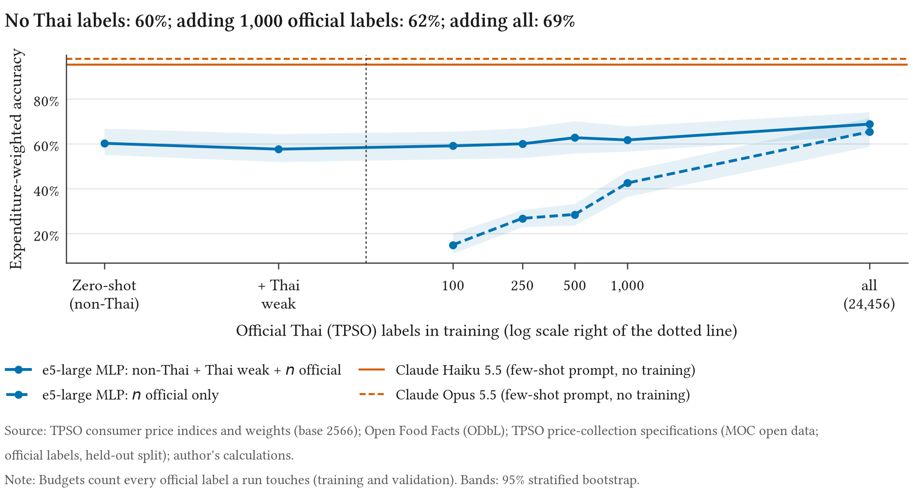
Plain accuracy hides all of this. The held-out list is mostly out-of-scope specifications, and a classifier that answers oos to almost everything scores well on it: the e5-large MLP trained on a hundred official labels alone is right on 75.5% of the list but on only 15.0% of the evaluated CPI weight. Conversely, the zero-shot classifier is right on only 16.0% of the list because it was never shown an out-of-scope Thai text, yet it measures most of the weight correctly. A metric weighted by expenditure is not a refinement here; it reverses the ranking.
The input fields matter less than the labels. Removing the brand or the quantity from the Open Food Facts training texts (the official specifications keep theirs) changes weighted accuracy by amounts we cannot tell from zero: 2.9 points [1.2, 6.6] for the brand and 0.2 [2.6, 3.3] for the quantity, and under the NNLS split 1.2 [1.7, 4.2] and 2.1 [0.2, 5.1]. Each variant is a single training run, so the intervals leave out training-seed variation. Figure 4 shows why transfer works for some items and not for others: in the embedding space, Thai beverages, eggs and dairy products sit among non-Thai products of the same item, while Thai processed seafood, other fresh seafood and processed meat do not.
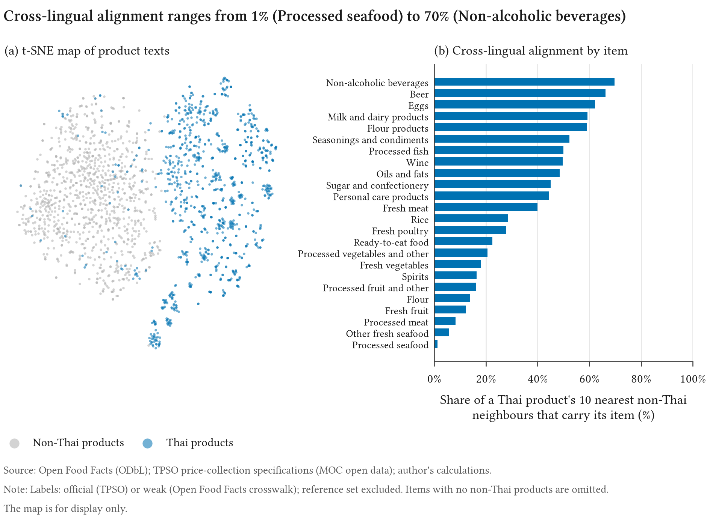
5.2 RQ2: accuracy, coverage and cost
Answer. On official Thai text the LLMs are far ahead. Claude Opus 5.5 classifies 97.9% [94.7, 99.3] of the evaluated weight correctly and Claude Haiku 5.5 95.4% [90.9, 98.3], against 69.5% for the best cheap method with the full input (the fine-tuned XLM-R). A cascade that sends the e5-large MLP’s unsure products to Claude Opus 5.5 scores 97.8% at 27% of its cost.
The gap between the LLMs and every cheap method is large and certain: Claude Haiku 5.5 is ahead of the e5-large MLP by 26.6 points [19.4, 32.1], of bge-m3 by 26.2 and of the fine-tuned XLM-R by 26.0. Claude Opus 5.5 is ahead of Claude Haiku 5.5 by 2.5 points [0.3, 5.3] and costs 25 times as much: USD 2,014.73 per million products against USD 79.12, while the embedding classifiers cost well under a dollar (USD 0.35 for the e5-large MLP; Figure 5). Under the NNLS split the scores of the headline methods fall, because NNLS moves weight onto the item with the largest LLM error (below), but the LLMs stay ahead (Claude Opus 5.5 91.8%, Claude Haiku 5.5 90.6%, e5-large MLP 59.9%).
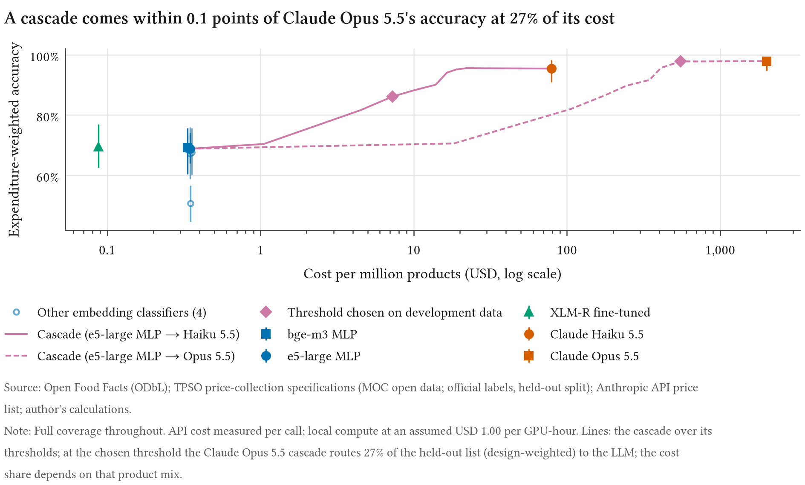
Cascades work when the threshold is set where the cheap model is reliable. Every threshold was chosen on the development data, the Thai weak-label validation split, which is Open Food Facts text. For the e5-large MLP and Claude Opus 5.5 it chose a confidence threshold of 0.95; 27% of the held-out list, counted with its design weights, went to the LLM (72% of in-scope specifications and 6% of out-of-scope ones, so the cost share rises with the in-scope share of the products), and the cascade scored 97.8%, a paired difference from Claude Opus 5.5 of 0.1 points [2.6, 0.4]. The other cascades were given lower thresholds, routed fewer products and differed from the LLM they call by between 6.4 and 9.3 points. Confidence calibrated on one kind of text was too high on the other: a cheap classifier is confidently wrong on sub-items it has never seen.
Abstaining does not close the gap. Figure 6 trades coverage for accuracy: the cheap methods gain accuracy as they leave their least confident products unclassified, but even on the small share of weight they are surest about they stay below the LLMs’ accuracy at full coverage.
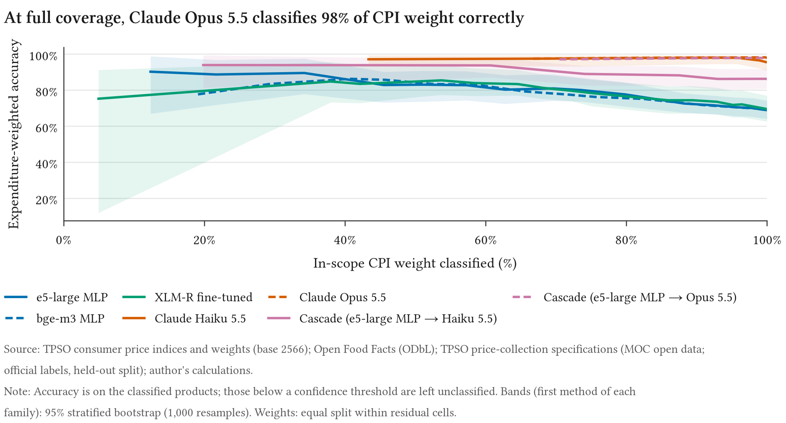
Where the errors are. The cheap methods miss whole items. The fine-tuned XLM-R misses every held-out specification of fresh meat, freshwater fish, processed fish and tobacco (each a small cell, with 1 to 17 held-out specifications, so these are thin evidence one by one), sends most personal-care specifications to oos, and confuses seasonings with beverages and cleaning with personal-care products (Figures 7 and 8); its 897 in-scope errors fall on 24 sub-items. The LLMs’ errors are concentrated. Claude Opus 5.5’s 424 in-scope errors fall on 6 sub-items, and 399 of them (94%) on three; Claude Haiku 5.5’s largest three are the same. The TPSO item whose Thai name means “personal items” covers wristwatches, school bags and hair dryers as well as soap and toothpaste. Our label description, written from the item headings, named only personal-care goods, and both LLMs sent the held-out wristwatches, school bags and hair dryers to oos. The next largest error is margarine, which TPSO counts under milk and dairy products and our description listed under oils and fats; the LLMs followed the description. These are not failures to read Thai. They are gaps in our documentation of the official item contents, and better documentation is the likely remedy; we did not test it. We did not change the descriptions after seeing them, since that would tune on the reference set. Because NNLS gives the personal-items cell a much larger weight than the equal split does, it is this one gap that lowers the LLM scores under NNLS.
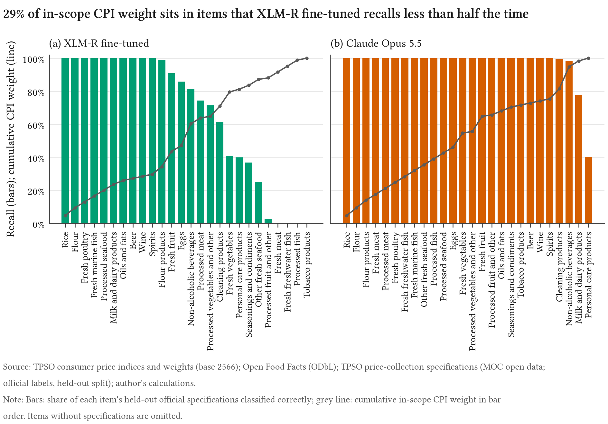
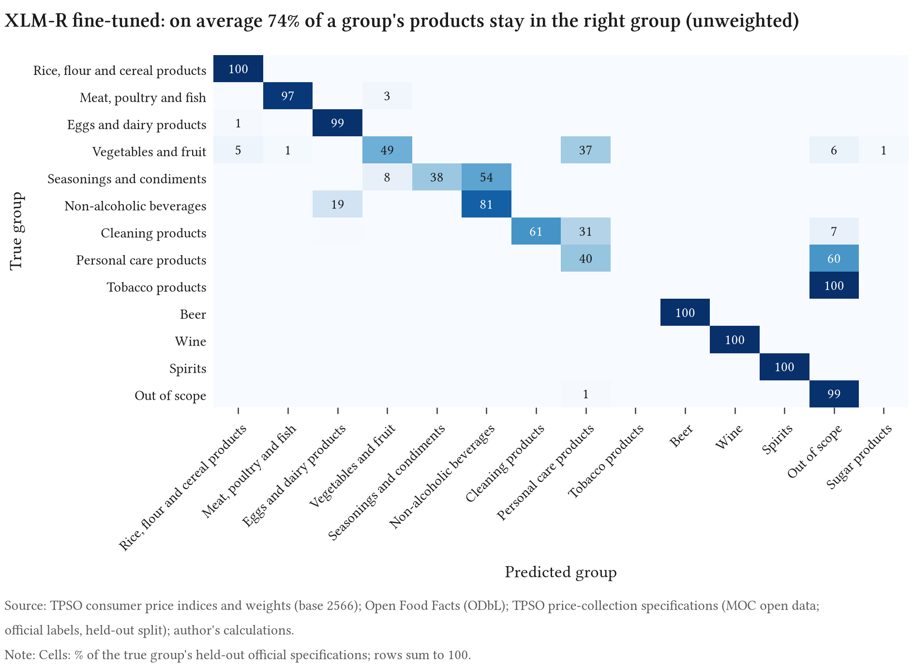
5.3 RQ3: classification error in basis points
Answer. With Claude Opus 5.5’s confusion matrix, measured headline inflation would differ from official inflation by 1.9 basis points (RMSE of the year-on-year rate), food inflation by 3.2 and core inflation by 2.6. The 95% interval for the sampling of specifications reaches 2.6 basis points for the headline; resampling whole sub-items, within which errors cluster, widens it to 3.7, and to 7.9 under the NNLS split. The cheap methods trained on all labels misstate headline inflation by between 1.9 and 10.4 basis points. The LLMs’ lead is clear in accuracy; in basis points it is large on food against two of the three cheap methods, but once errors may cluster the intervals overlap. Accuracy does not rank methods by this error: two cheap methods with about the same weighted accuracy differ several-fold in basis points.
The simulator covers 10 year-on-year rates (December 2025 to September 2026) and 21 month-on-month rates (January 2025 to September 2026). Figure 9 gives the year-on-year error of every headline method. Both LLMs and the e5-large–Claude Opus 5.5 cascade err by about two to five basis points on every aggregate; on month-on-month inflation Claude Opus 5.5’s headline error is 0.5 basis points. The errors lean one way: Claude Opus 5.5’s mean headline error is 1.5 basis points, so measured inflation would on average be slightly too high. For the e5-large MLP and the fine-tuned XLM-R, food is where errors bite: 24.2 basis points for the e5-large MLP [17.0, 31.6] and 22.3 for the fine-tuned XLM-R, whose errors are one-sided (a mean of 19.5 basis points): it understates food inflation in every month (Figure 10). The core proxy reverses the ranking. It excludes fresh food, where most of the cheap methods’ costly confusions lie, and keeps oils and fats and personal care, where the LLMs’ lie: the fine-tuned XLM-R’s core error is 0.8 basis points [0.7, 1.9] against 2.6 for Claude Opus 5.5 under the equal split; under the NNLS split the two are close (3.3 against 3.8). Zero-shot transfer, which RQ1 found to get most of the weight right, misstates headline inflation by 14.7 basis points and food inflation by 38.7: getting most of the weight right does not bound the error from the rest.
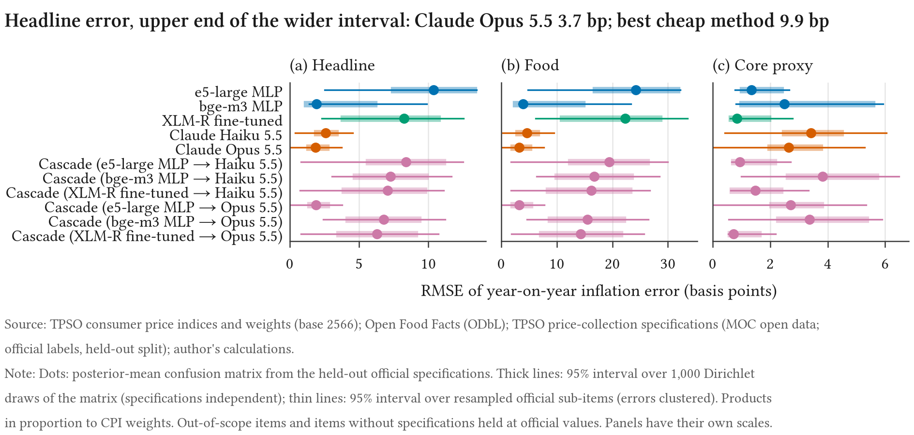
The bge-m3 MLP shows why accuracy is not enough. Its weighted accuracy is about the same as the e5-large MLP’s (69.2% against 68.8%), but its point estimate of the headline error is 1.9 basis points against 10.4. What matters is not how much weight is misclassified but whether the two items’ prices diverged. The interval for bge-m3 is wide (1.2–6.1) and the point is at its lower end, so we would not choose a classifier on this point alone. The decomposition of Section 4.3 shows where the basis points come from (Figure 11): for the fine-tuned XLM-R, fresh vegetables classified as fresh fruit contribute more than any other confusion, and confusions in opposite directions partly cancel. For Claude Opus 5.5 the two largest contributions are out-of-scope products classified as personal care and margarine counted under oils and fats. The wristwatches, school bags and hair dryers sent to oos contribute nothing: a product sent out of scope leaves measurement without entering another item, so in the simulator it lowers accuracy but adds no bias.
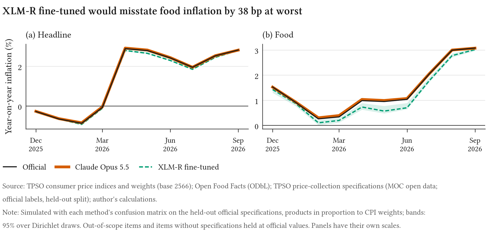
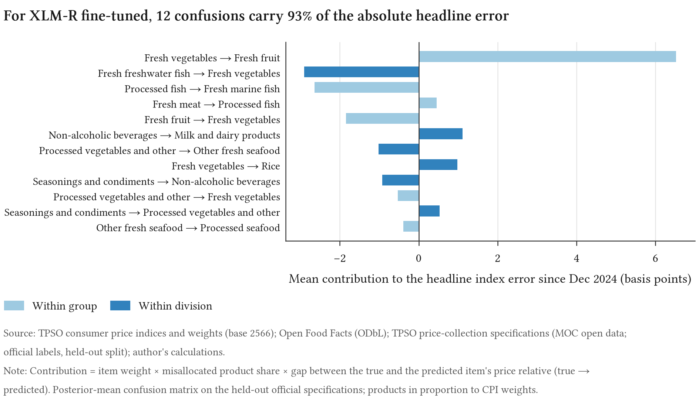
Robustness. Four assumptions move these numbers. The weights inside cells: under the NNLS split Claude Opus 5.5’s headline error is 2.7 basis points [1.8, 3.6], the e5-large MLP’s 14.3 and the bge-m3 MLP’s 2.8. Clustered errors: resampling sub-items gives Claude Opus 5.5 a headline interval of 0.0–3.7 and the bge-m3 MLP one of 1.4–9.9. The product universe: if products arrive in proportion to the office’s specification list rather than to CPI weights, Claude Opus 5.5’s headline error is 4.4 basis points and the e5-large MLP’s 7.4. Product-level noise: if each product’s price drifts from its item’s with an annual standard deviation of 10%, Claude Opus 5.5’s headline error rises to 4.7 basis points [1.7, 11.5]. Most of that is not classification: a perfect classifier with the same noise has an error of 4.3, the cost of measuring each item from a finite sample of products. At 5% the two are 2.8 and 2.2. Without noise a perfect classifier has an error of 0.0, as it must; that is a unit test of the simulator, not a finding.
Basis points need accuracy alongside. A product sent out of scope leaves measurement, and without product-level noise an item measured from a few correctly classified products is measured exactly. A classifier that sends nearly everything out of scope therefore looks good in basis points: the e5-large linear classifier trained on a hundred official labels alone gets only 7.3% of the weight right, yet its headline error is 0.8 basis points. Product-level noise exposes it: at 10% its error is 30.8 basis points, against 4.7 for Claude Opus 5.5 and 4.3 for a perfect classifier. Neither metric ranks methods alone; a method should be chosen on both.
6 Discussion: what this means for central banks in Asia
Many central banks and statistical offices in Asia are building price measures from web and scanner data in languages for which little labelled product text exists. The Thai results suggest five points for that work. Each holds for one index, one language and the office’s own text, and should be checked on other data before it is relied on.
Basis points are the measure that matters. Weighted accuracy reversed the ranking that plain accuracy gave, and even weighted accuracy did not rank methods by their effect on measured inflation, and basis points alone flatter a classifier that measures little of the weight. Two classifiers that each get about 68.8% of the weight right differ several-fold in basis points. The simulator of Section 4.3 needs only a confusion matrix on held-out labels, the published weights and the published item indices. An office that already publishes an index can therefore state the classification error of a new source in the unit its users care about before the source enters production. The decomposition says which confusions to fix first.
A published specification list is a public good. The most useful data in this paper are the Ministry of Commerce’s price-collection specifications: Thai descriptions with official item codes, released as open data. They served as training labels, as development data and as the reference set, and without them no number in Section 5 could have been computed. Where an office publishes such a list, every researcher and vendor has a common benchmark in the local language at no cost to the office.
LLM classification is affordable at the scale of a price index. Claude Haiku 5.5 classified official Thai text with 95.4% weighted accuracy at USD 79.12 per million products, and the e5-large–Claude Opus 5.5 cascade came within sampling error of Claude Opus 5.5 at USD 553.25 per million. The whole set of LLM runs for this paper cost USD 14.72. The question is then one of governance more than budget: closed models change, responses must be cached and versioned, and an office may prefer an open model it can run itself. The cheap methods were not close enough to make that choice free: for every cheap method trained on all labels, the upper end of the interval for the headline error was above the LLMs’.
Documentation of the basket may matter as much as the model. The LLMs’ largest errors came from two items whose official contents differ from what their headings suggest: TPSO’s personal items include wristwatches, school bags and hair dryers, and its milk and dairy products include margarine. A classifier can only follow the definition it is given. A description of what each item includes and excludes, maintained with the classification, might remove most of these errors for the LLMs; this paper does not test that, and whether such a description can be published is a decision for each office.
Transfer gets a long way, but not all the way. With no Thai label at all, non-Thai products taught an embedding classifier to place 60.3% of the evaluated weight, and the alignment of Thai products with their non-Thai neighbours varied widely by item. For languages with even fewer resources than Thai, this is a usable starting point and a guide to where official labels are needed first: in the items where local products look least like foreign ones. But the error of the zero-shot classifier in basis points was large, and an office would need at least a held-out labelled sample in its own language to know how large before it publishes anything built on it.
Two cautions apply to all five points. The reference text here is the office’s own short descriptions; shop text is longer and noisier, and accuracy on it will be lower. And the basis-point figures assume a product universe; a real stream of web products would have its own mix. A labelled sample of the text to be classified, drawn with known probabilities, would resolve both and is the natural next step for any office that applies these methods.
7 Limitations
The reference text is the office’s, not the shop’s. The reference labels come from TPSO’s price-collection specifications: short, regular descriptions written by the office for its own collection. Shop and database texts are longer, noisier and more varied. Accuracy on the reference set is therefore accuracy on the office’s vocabulary; a classifier deployed on web or scanner data would face harder text, and the learning curve measures the value of official labels, not of labelled shop data. The specifications are public and may have been seen by the LLMs in pre-training.
Two items cannot be evaluated. Ready-to-eat food, the heaviest in-scope item, and sugar and confectionery have no specifications in the published file. Their classification error is unknown, the simulator holds them at official values and drops the products a method sends to them, as if it had abstained, and the basis-point figures cover 24.9% of the headline weight rather than 40.5%. Items with few specifications have wide intervals, and the 13 items with a single held-out sub-item have intervals that are too narrow, since a resample cannot draw a sub-item they do not have.
No human label ceiling. The original design included a sample of Thai products labelled by hand with a blind second pass, to measure how consistent a labeller is and to set that against the human error rate Spectrum reports (BIS Innovation Hub 2026, 15). No such labels were collected, so this paper does not measure the label ceiling and takes the official labels as correct. Official codes can be wrong or ambiguous too; a method that disagrees with the office is occasionally right.
The label descriptions are ours. Every classifier sees the labels only through names and short descriptions that we wrote from TPSO’s item headings, and the LLMs see nothing else. Most of the LLMs’ errors come from two places where those descriptions disagree with the office’s practice: personal items that are not personal-care goods, and margarine. We left the descriptions unchanged, since changing them after seeing the reference set would tune on it. A description that matched the official item contents might well raise the LLM scores, but we have not tested that.
The development data are not the deployment text. Cascade thresholds were chosen on the Thai weak-label validation split, which is Open Food Facts text. The confidence of the cheap classifiers on that text did not carry over to official specifications, and most cascades routed too few products. An office would have to choose thresholds on data like the text it classifies.
The product universe is assumed. The reference set is a list, not a stream of products, so the shares in the simulator are assumptions. Section 4.3 reports two: products in proportion to CPI weights, and in proportion to the office’s list. A real web or scanner stream has its own mix, and the error in basis points scales with it; the hand-labelled product sample of the original design would have measured it.
Item weights below the published cells are estimated. TPSO publishes weights for its aggregates only. The equal split and the NNLS split are two transparent estimates; they agree on the cells but not on the items inside them. Results that depend on which item inside a cell carries the weight are reported under both.
The simulator measures classification error only. It takes official item relatives as the true price movements of every product and changes nothing but the assignment of products to items. A real web-price index would add sampling, matching, quality-adjustment and outlier error on top. Three modelling choices are assumptions rather than estimates: leaked out-of-scope products move with the indices of the out-of-scope items the reference set shows them coming from, an item that receives no products takes its group’s measured movement, and the product-level dispersion of the noise variants is assumed, not measured.
One training run per classifier. Every classifier is trained once, with one seed. The intervals cover the sampling of the reference set, not the variation between training runs, so small differences between trained classifiers, such as the text ablations, may not survive a second run.
Closed models change. The LLMs are reached through a commercial API. Model revisions, prices and refusal behaviour can change after the run date; every response is cached so that the numbers here can be reproduced, but not necessarily re-obtained. Local compute is costed at an assumed price per GPU-hour.
Not comparable to Spectrum. Spectrum classifies euro-area web data into the ECOICOP 2018 subclasses (BIS Innovation Hub 2026). Our taxonomy, language, product universe, label source and metrics differ, so our numbers are not directly comparable with theirs, and we do not compare them.
8 Conclusion
Classification is the step that turns a list of products into a price index, and its error can be stated in the unit of the index. For Thai product text, transfer from other languages gets an embedding classifier to 60.3% of the evaluated CPI weight without a single Thai label; official labels raise this to 68.8%; and a frontier LLM reaches 97.9%, at a cost that a cascade cuts to 27% with no loss the reference set can detect. Passed through a simulator of the Thai CPI, the LLM’s errors would misstate headline year-on-year inflation by 1.9 basis points and the cheaper classifiers’ by 1.9 to 10.4. Accuracy does not rank methods by that error, and neither does the error alone; both are needed, and the decomposition shows which confusions to fix. Most of the LLMs’ remaining errors are not errors of language but gaps in the documentation of the official basket. The open questions are on the side of the data: how these numbers change on shop text rather than the office’s own, and on a real stream of products rather than an assumed one. A labelled, probability-sampled set of web products would answer both.
References
A Data sources and reproducibility
| Source | Use | Licence |
|---|---|---|
| Open Food Facts, Open Beauty Facts (Open Food Facts contributors 2026) | Product text; weak labels (training and development) | ODbL |
| TPSO open API (Trade Policy and Strategy Office 2026) | Monthly item and aggregate indices | Thai open government data |
| TPSO monthly CPI release | Price-updated weights of the aggregates | Thai government publication |
| TPSO base-year note (Trade Policy and Strategy Office 2025) | Division weights; base-year changes | Thai government publication |
| MOC open data (Ministry of Commerce, Thailand 2026) | Official specifications (official labels) | Thai open government data |
| COICOP 2018 (United Nations Statistics Division 2018) | Class codes of the in-scope items | Cited |
The repository rebuilds every number in this paper from public sources. make data downloads the sources and checks their checksums; make models computes the embeddings, trains the classifiers and runs the LLMs (cached responses are replayed, so no API call is made when the cache is present); make eval econ scores the methods on the reference set and runs the simulator; make figures paper draws the figures and builds this PDF. cpilens report writes every number the paper prints into paper/numbers.tex, and a check in continuous integration fails if the paper’s sources contain a number typed by hand. results/run_manifest.json records package versions, model revisions and the random seed (20261027).
B In-scope items and crosswalk
Table 2 lists the in-scope items with their COICOP 2018 classes and both estimated weights. The crosswalk from Open Food Facts category tags to these items is in , with the basis of each mapping (usually the TPSO item heading it follows).
| Code | Item | COICOP 2018 | Equal | NNLS | Ref. |
|---|---|---|---|---|---|
| 11110 | Rice | 01.1.1 | 1.16 | 2.57 | 250 |
| 11121 | Flour | 01.1.1 | 1.16 | 0.02 | 37 |
| 11122 | Flour products (bread; noodles; pasta) | 01.1.1 | 1.16 | 0.88 | 110 |
| 11211 | Fresh meat | 01.1.2 | 0.89 | 2.58 | 1 |
| 11212 | Processed meat | 01.1.2 | 0.89 | 0.39 | 156 |
| 11221 | Fresh poultry | 01.1.2 | 0.89 | 0.95 | 2 |
| 11231 | Fresh freshwater fish | 01.1.3 | 0.89 | 1.22 | 6 |
| 11232 | Fresh marine fish | 01.1.3 | 0.89 | 0.35 | 7 |
| 11233 | Other fresh seafood | 01.1.3 | 0.89 | 0.87 | 8 |
| 11234 | Processed fish | 01.1.3 | 0.89 | 0.62 | 8 |
| 11235 | Processed seafood | 01.1.3 | 0.89 | 0.13 | 3 |
| 11310 | Eggs | 01.1.4 | 0.88 | 0.81 | 7 |
| 11320 | Milk and dairy products | 01.1.4 | 0.88 | 0.95 | 89 |
| 11411 | Fresh vegetables | 01.1.7 | 2.13 | 2.13 | 22 |
| 11412 | Processed vegetables and other | 01.1.7 | 0.23 | 0.43 | 7 |
| 11421 | Fresh fruit | 01.1.6 | 2.27 | 2.27 | 11 |
| 11422 | Processed fruit and other | 01.1.6 | 0.23 | 0.03 | 39 |
| 11521 | Oils and fats | 01.1.5 | 0.59 | 0.44 | 2 |
| 11522 | Seasonings and condiments | 01.1.9 | 0.59 | 0.73 | 87 |
| 11600 | Non-alcoholic beverages | 01.2.1, 01.2.2, 01.2.3, 01.2.4, 01.2.5, 01.2.6, 01.2.9 | 3.29 | 3.29 | 59 |
| 11710 | Sugar and confectionery | 01.1.8 | 0.84 | 0.84 | 0 |
| 12300 | Ready-to-eat food | 01.1.9, 11.1.1 | 14.78 | 14.78 | 0 |
| 36000 | Cleaning products | 05.6.1 | 1.54 | 1.61 | 763 |
| 42100 | Personal care products | 13.1.2 | 0.43 | 3.37 | 668 |
| 71000 | Tobacco products | 02.3.0 | 0.31 | 0.43 | 17 |
| 72100 | Beer | 02.1.3 | 0.31 | 0.54 | 7 |
| 72200 | Wine | 02.1.2 | 0.31 | 0.01 | 25 |
| 72300 | Spirits | 02.1.1 | 0.31 | 0.26 | 19 |
C LLM prompt
The system prompt opens with the instructions below. It then lists every label by CPI group (code, Thai and English name, and what it includes) and the official examples, each as text -> label. The product is sent as the user message. The full prompt is generated by cpilens.classify.llm.system_prompt.
You classify products sold in Thai shops into the item categories of the Thai consumer price index (CPI, base year 2023 = BE 2566), compiled by the Trade Policy and Strategy Office (TPSO). Each product is given as `name | brand | quantity`; names are usually Thai, sometimes English or other languages.
Pick exactly one label. First choose the group, then a label inside that group. Use OOS when the product belongs to none of the labels (for example pet food, medicines, kitchenware, stationery, electronics). Classify what the product is, not its flavour: a shrimp-flavoured cracker is a snack (11122), not seafood. Confidence is your probability, 0-100, that the label is correct.D Hyperparameters
Table 3 lists the settings of the classifiers, the cascade, the evaluation and the simulator. Each value is read from the code when the paper is built, so the table cannot drift from what was run.
| Setting | Value |
|---|---|
| -NN: candidate | 1, 3, 5, 10, 20, 50 |
| Linear and MLP: optimiser, learning rate, weight decay | Adam, , |
| MLP: hidden units, dropout | 512, 0.2 |
| Batch size (at most); early-stopping patience | 512; 3 |
| Fine-tuning: epochs (at most), batch, learning rate | 4, 64, |
| Fine-tuning: maximum input length (tokens) | 64 |
| LLM: official examples per item; maximum output tokens | 2; 2,048 |
| Cascade: candidate thresholds (the last routes every product) | 0, 0.3, 0.5, 0.6, 0.7, 0.8, 0.85, 0.9, 0.95, 0.98, 1.01 |
| Official-label budgets | 100, 250, 500, 1,000 and all |
| Bootstrap resamples; simulator draws; prior weight | 1,000; 1,000; 1 |
| Noise variants: annual dispersion (%) | 5, 10 |
| Reference set: held-out out-of-scope specifications kept (design-weighted) | 1,500 |
E Compute and cost ledger
Every billed API call is logged with its tokens and cost in results/llm_costs.csv; Table 4 sums it. Input tokens include prompt-cache writes and reads, which are billed at different rates.
| Model | Stage | Calls | Input tokens | Output tokens | USD |
|---|---|---|---|---|---|
| claude-haiku-5-5 | eval | 11,360 | 64,277,293 | 346,765 | 0.90 |
| claude-haiku-5-5 | smoke | 5 | 27,665 | 121 | 0.00 |
| claude-opus-5-5 | eval | 6,838 | 39,252,303 | 195,076 | 13.78 |
| claude-opus-5-5 | probe | 10 | 55,304 | 262 | 0.05 |
| Total | 18,213 | 103,612,565 | 542,224 | 14.72 |
F Terms used in the figures
Out of scope: a product of an item that the classifiers do not cover (energy, services, clothing, durable goods and the like). Sending a product to OOS removes it from measurement.
The share of the evaluated CPI weight classified correctly, equation (1).
Trained without any Thai label: only on products in other languages.
Labels derived automatically from Open Food Facts categories through the crosswalk of Appendix B, not assigned by a person or by the office.
TPSO item codes attached to its price-collection specifications.
Three classifiers on top of a fixed text embedding: nearest neighbours, logistic regression and a neural network with one hidden layer.
A multilingual encoder whose own parameters are trained on the labels, rather than a classifier on a fixed embedding.
A cheap classifier keeps the products it is confident about and sends the rest to an LLM.
TPSO’s core CPI, which excludes raw food (rice, flour and cereals; meat, poultry and fish; eggs and dairy products; vegetables and fruit) and energy. In the simulator every in-scope item outside those four food groups counts as core.
A method that draws high-dimensional embeddings on a plane for display; distances on the map are only roughly meaningful.
Confusion matrices drawn from the posterior given the reference counts, used for the intervals of the basis-point errors.
Root mean squared error of the simulated inflation rate against the official rate, over the simulated months.